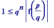
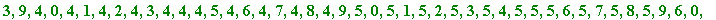
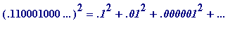

Liouville (1809-1882)
What is now proved was once only imagin'd (William Blake)
All authors credit Liouville with being the discoverer (creator?) of the first example of a transcendental number, but there is definite confusion with regard to dates . All are agreed on the date (1844), and even on the approximation theorem (again 1844) that he used, but not on the actual number that he first proved to be transcendental.
In seems that in his 1844 paper he proved there were transcendental numbers by using his approximation theorem and continued fractions (indeed anyone who knows both can readily create their own private transcendental numbers at will), but, it seems , it wasn't until 1851 that he gave the following example (that many authors state he gave in 1844), the number now named the Liouvillian number , namely the sum of the infinite series ), the decimal number:
0.
11
000
1
00000000000000000
1
0000...
where the 1 's occur at the , ... places.
Here is one case (perhaps the only case) where a beginner may follow with little difficulty a transcendence proof . It all depends on a completely simple, but utterly important observation concerning how well algebraic numbers may be approximated by rational numbers:
Theorem (Liouville, 1844). Let
 be any real algebraic number of degree
n
(
be any real algebraic number of degree
n
(
 ), then there is a positive constant
(i.e. the value of
c
depends
only
on
), then there is a positive constant
(i.e. the value of
c
depends
only
on
 ) such that
) such that
 >
... (i)
>
... (i)
for
all
rational numbers
 (
p
and
q
integers, with
q
> 0).
(
p
and
q
integers, with
q
> 0).
Remark 1. Liouville's theorem is also true when
n
= 1, in other words in the case where
 is itself a rational number. There is then an obvious modification that needs to be made in the statement of the theorem: instead of "for
all
rational numbers
is itself a rational number. There is then an obvious modification that needs to be made in the statement of the theorem: instead of "for
all
rational numbers
 ", one now needs the necessary restriction
. The validity of (i) is then a complete triviality, for suppose
(
a
and
b
integers,
b
> 0) and that
. Then
", one now needs the necessary restriction
. The validity of (i) is then a complete triviality, for suppose
(
a
and
b
integers,
b
> 0) and that
. Then
=
=
, is at least
.
since the previous numerator,
, is
at least
1 (it can't be 0 since otherwise
)
Thus (i) holds with (say) .
Remark 2. Inequality (i) is completely trivial if
 is not close to
is not close to
 , since, in that case, the left hand side of (i) is not small, whereas
has minimum value 1, and is quite small when
q
is large. In short, one should
appreciate
that the inequality (i) is only of
significance
for rationals
, since, in that case, the left hand side of (i) is not small, whereas
has minimum value 1, and is quite small when
q
is large. In short, one should
appreciate
that the inequality (i) is only of
significance
for rationals
 that are
close
to
that are
close
to
 .
.
(The) Proof of Liouville's theorem (is easy). Let be the irreducible polynomial with integer coefficients such that , and let p and q be integers with q > 0. Then, by the mean value theorem,
= (
)*f '(
 ) ... (ii)
) ... (ii)
for some
 between
between
 and
and
 (where f '(
x
) is the first derivative of f(
x
)).
(where f '(
x
) is the first derivative of f(
x
)).
If
then (i) holds (trivially) with (e.g.)
, whereas if
, then
, and thus |f '(
 )| is bounded above by a constant
c
' whose value depends only on (numbers associated with)
)| is bounded above by a constant
c
' whose value depends only on (numbers associated with)
 :
:
|f '(
 )| =
)| =
where H is the maximum of the absolute values of the coefficients . Multiplying through (ii) by , and using (since f( x ) is irreducible of least degree 2, and so has no rational roots), gives

=
*|f '(
 )| <
)| <
 *
c
'
*
c
'
(i) follows immediately.
___________________
I include the following only to illustrate the
idea
behind the proof of Liouville's theorem. I choose an algebraic
 of degree 3, one that is a solution of the (irreducible) equation
:
of degree 3, one that is a solution of the (irreducible) equation
:
> restart;
> f := x -> 6*x^3 - 14*x^2 - x + 11;
> factor(f(x));
> plot(f(x), x = -1..2);
>
I choose
 to be the largest of those solutions (you can see it is
slightly more
than 1.925...)
to be the largest of those solutions (you can see it is
slightly more
than 1.925...)
> fsolve(f(x) = 0);
>
and a rational number
 that is
near
to
that is
near
to
 (in the following diagram I have chosen
two
rational numbers that are close to
(in the following diagram I have chosen
two
rational numbers that are close to
 :
:
-
, slightly to the left of
 , and
, and
-
, slightly to the right of

Then, close in
near
 , the graph of the function is
almost linear
, and thus (whether
, the graph of the function is
almost linear
, and thus (whether
 be
or
):
be
or
):
(which is a non-zero rational number - with denominator
- and so has minimum value
 )
)
is
almost
equal to
 *|f '(
*|f '(
 )|
)|
It should be clear, then, that
 is bounded,
from below
, by a constant multiplied by
is bounded,
from below
, by a constant multiplied by
 .
.
>
with(plots): with(plottools):
pl1 := plot(f(x), x = 1.89..1.955, thickness=2):
pl2 := textplot([1.93,-0.03,`alpha`],align=LEFT):
p1 := 19: q1 := 10:
l1 := line([p1/q1, 0], [p1/q1, f(p1/q1)], color=navy, thickness=2):
p2 := 39: q2 := 20:
l2 := line([p2/q2, 0], [p2/q2, f(p2/q2)], color=brown, thickness=2):
pl3 := textplot([1.9,0.06,`p1/q1`],align=ABOVE):
pl4 := textplot([1.9,-0.3,`f(p1/q1)`],align=RIGHT):
pl5 := textplot([1.95,-0.02,`p2/q2`],align=BELOW):
pl6 := textplot([1.95,0.35,`f(p2/q2)`],align=LEFT):
display([pl1, pl2, l1, l2, pl3, pl4, pl5, pl6]);
Warning, the name changecoords has been redefined
![[Maple Plot]](images/transcendental481.gif)
>
Once one is in possession of Liouville's theorem, transcendental numbers simply fall into ones lap (in fact, with Cantorian hindsight, one may construct an uncountable number of such Liouville-type numbers). Anyone who is familiar with continued fraction expansions of irrational numbers will see immediately that all one has to do - to produce transcendental numbers - is to define numbers whose partial quotients grow in size sufficiently rapidly... I think that is what Liouville did in his 1844 paper (I've never read the original paper, and stand to be corrected), whereas it was in a later (1851) paper that he gave (what many seem to think was in the 1844 one) his well-known decimal example mentioned earlier:
 = 0.
11
000
1
00000000000000000
1
0000...
= 0.
11
000
1
00000000000000000
1
0000...
Proof of transcendence of
 (the real number
cannot
be algebraic since it possesses rational approximations that are
incompatible
with it being algebraic; the relevant rational approximations are simply the early, (first
m
terms, varying part), of the infinite sum).
(the real number
cannot
be algebraic since it possesses rational approximations that are
incompatible
with it being algebraic; the relevant rational approximations are simply the early, (first
m
terms, varying part), of the infinite sum).
Now is a rational number with denominator , and thus
, where the remainder term, , is positive and less than .
(true for all m = 1, 2, 3, 4, ... )
That latter inequality is incompatible with
 being an algebraic number: for if
being an algebraic number: for if
 were algebraic of degree
n
then one would have
>
, which is clearly impossible for
m
sufficiently large.
were algebraic of degree
n
then one would have
>
, which is clearly impossible for
m
sufficiently large.
Cantor motivated observation. With Cantorian hindsight one may in fact observe that there are an uncountable number of transcendental numbers of Liouville type (meaning ones whose transcendence may be established by the Liouville approach). Simply let {
 } be any infinite sequence in which
or 2 for all
n
. There is an uncountable number of such sequences, and, for any one of those sequences, the number
} be any infinite sequence in which
or 2 for all
n
. There is an uncountable number of such sequences, and, for any one of those sequences, the number
 defined by
defined by
is transcendental, and no two such numbers are equal (different sequences produce different numbers, in this case ).
________________
Actually, there is a way of seeing that the above number is transcendental, without knowing anything about the above approximation theorem. Indeed this alternative way could be understood by a numerate school pupil with some ability. All that is needed is that one should know - really know! - how to multiply decimals together, as I will now illustrate.
Question . Which do you think is easier to work out:
- the square of the infinite decimal number 0.01010101 ... ?, or
- the square of the infinite Liouville decimal number 0.11000100 ... ?
If you tried to do the first one longhand (as we all learned at school) I think you would soon run into trouble. Try it! Ask your pupils to try it. The 'carrying' gets to be troublesome...
It shouldn't surprise you to know that the squared decimal will be
periodic
: that's simply because the above decimal - which should be seen as the sum of the
infinite geometric series
with initial term
 and 'common ratio'
and 'common ratio'
 - is, of course, the decimal expansion of the rational number
, and thus the sought, squared decimal, will be whatever is the decimal expansion of
- is, of course, the decimal expansion of the rational number
, and thus the sought, squared decimal, will be whatever is the decimal expansion of
 . But what are the digits in that expansion? First, here are the already seen digits in the infinite expansion of
. But what are the digits in that expansion? First, here are the already seen digits in the infinite expansion of
 :
:
> with(numtheory):
Warning, the protected name order has been redefined and unprotected
> pdexpand(1/99);

>
That final "[0, 1]" is to be repeated ad infinitum to produce the decimal expansion of
 .
.
Here are a few others before we see the decimal expansion of
 :
:
> pdexpand(1/7);
which means that
> pdexpand(1/28);
which means that (with only the '571428' being repeated)
> pdexpand(-97/26);
which means that (with only the '307692' being repeated)
And finally, the decimal expansion of
 is (anyone like to guess before I reveal it?):
is (anyone like to guess before I reveal it?):
> pdexpand(1/99^2);

>
There are 198 digits in the repeating cycle. Don't try - by hand! - working out the decimal expansion of the cube of
 : there are 19602 digits in the cycle. Anyone familiar with the relevant Number Theory will know it's to do with the fact that
= 19602 (= 2*
), and the above decimal expansion is to do with the fact that
= 198 (= 2*99):
: there are 19602 digits in the cycle. Anyone familiar with the relevant Number Theory will know it's to do with the fact that
= 19602 (= 2*
), and the above decimal expansion is to do with the fact that
= 198 (= 2*99):
> order(10, 99^2);
>
and thus that the periodic block of the decimal expansion of commences with three 0s, followed by:
> (10^198 - 1)/99^2;
>
It might initially surprise the unsuspecting that it's much easier to work out - by hand! - the decimal value of the square of the above Liouvillian decimal. And its cube, and its fourth power, and ... . Of course one sees why it's easier... : those huge blocks of 0's between the 1's. That alone - without having to use Liouville's approximation theorem - allows one to argue that the Louville decimal is transcendental, as I now illustrate.
First I
manufacture
a certain quadratic polynomial,
, for which the above Liouville number (
 ) is
almost
a root (i.e.
) is
almost
a root (i.e.
 is
almost
a solution of
is
almost
a solution of
 ).
).
This is how I arrived at that quadratic (don't worry if you don't follow the continued fraction reasoning behind it): I began by forming the rational number corresponding to the initial part of the Liouville number; in fact simply the third partial sum , which is a rational number, and so has a terminating continued fraction expansion:
> alpha3 := add(1/(10)^(n!), n = 1..3);
> cfrac(alpha3, quotients);

>
Anyone who knows about continued fractions, and knows the effect of a large partial quotient, will spot that '99', and realise why I now define the infinite periodic continued fraction with partial quotients [0, 9, 11, 99, 9, 11, 99, ... ], having initial 0, followed by the infinitely repeated block [9, 11, 99]:
> cf3 := [[0], [9, 11, 99]];
> beta3 := invcfrac(cf3);
>
Digits := 10:
evalf(beta3); # you see the 'extra' bit:
>
That number, beta3 (which is close to alpha3, which is close to
 ), is the solution of a quadratic equation, and that equation is recovered by setting
), is the solution of a quadratic equation, and that equation is recovered by setting
, , , etc:
> (expand((100*x + 4949)^2) - 24601601);

The coefficients obviously have gcd = 200:
> igcd(10000, 989800, 109000);
> solve(50*x^2 + 4949*x - 545 = 0); # the first is L3
>
Now observe how close
x
= alpha3 is to being a solution of the equation
. I will calculate the value of
-
 at
x
= alpha3, first to 7 decimal places, and then
at
x
= alpha3, first to 7 decimal places, and then
-
at
x
= alpha3, to 8 decimal places
and observe proximity to 545 :
>
evalf(50*alpha3^2 + 4949*alpha3, 7);
evalf(50*alpha3^2 + 4949*alpha3, 8);
>
Thus
x
= alpha3 is
almost
a solution of the equation
 , and we reasonably ask:
, and we reasonably ask:
could
 be
a solution?
be
a solution?
Without using Liouville's approximation theorem we may easily see that it isn't. I'm not going to 'dot every i and cross every t' , but rather give pointers and invite you to ponder on your own.
What one wants to do is to somehow calculate
 and
see
that it isn't 0.
and
see
that it isn't 0.
Note first of all that Maple can't do that exact calculation for us (though it can do many infinite sums):
>
restart;
alpha := sum(1/10^(n!), n = 1..infinity); # 'add' won't 'work'
> 50*alpha^2 + 4949*alpha - 545;

>
But one can calculate, or rather
see
the
essential
part of the decimal expansion of
by hand, and in the process
see
that
. The essential point is that it's actually quite easy to square
 -
much easier
than squaring the earlier challenge decimal .0101010101... - in the sense that one can
see
what its decimal expansion
is
(this is difficult to type up, since I want vertical holds on the place values in the good old-fashioned way of multiplying and 'carrying'). For each line you should keep in mind where the next '1' is occurs, and the next, and the next, ... :
-
much easier
than squaring the earlier challenge decimal .0101010101... - in the sense that one can
see
what its decimal expansion
is
(this is difficult to type up, since I want vertical holds on the place values in the good old-fashioned way of multiplying and 'carrying'). For each line you should keep in mind where the next '1' is occurs, and the next, and the next, ... :
.11000100000000000000000100000000... multiplied by
.11000100000000000000000100000000... is
.011000100000000000000000100000000... plus
.0011000100000000000000000100000000... plus
.00000011000100000000000000000100000000... plus
.00000000000000000000000011000100000000000000000 1 00000000... plus
ad infinitum , which adds up to
 = .01210022000100000000000022000200000000000000000
1
00000000... , thus
= .01210022000100000000000022000200000000000000000
1
00000000... , thus
= .6050110000500000000000110001000000000000000000 50 0000000...
= 544.3949490000000000000049490000000000000000000000000000... , which adds up to
544.9999600000500000000049600001000000000000000000 50 0000...
and what I am attempting to draw your eye's attention to is the occurence of that 50 , which is going to occur over and over again (as a consequence of which it is obvious that cannot be equal to 545, a whole number). I invite you to think about why that kind of thing happens, not just in this particular case but in the general case. The above kind of numerical play is only to give one a feeling for this, but you need to start thinking about the question: where, in place , do we get 1s occuring in the decimal expansion of (not just) (but ), and what then if the effect of multiplying by coefficients, and adding, ... Can we end up getting '0' after it's all totted up?
The numerical play has a more formal aspect to it (which should be preceded by play), and that formal aspect is the infinite version of (e.g.) ,
namely
+
+
 +
ad infinitum
+
ad infinitum
so as to see where 1s occur in  (each of those contributes a ' 1 ' to the decimal expansion) + the 'cross terms', each of which contributes a ' 2 ' to the decimal, and to see how isolated those 1 s are in terms of their neighbouring non-zero digits.
I will end with a lovely example from Conway & Guy's The Book of Numbers . They observe that the Liouville number is almost a solution of the 6th degree polynomial equation :
>
Digits := 24: alp := evalf(add(1/(10)^(n!), n = 1..4)):
10*alp^6 - 75*alp^3 - 190*alp;
>
They don't tell their readers how that polynomial was arrived at, and I leave it to my reader to speculate.